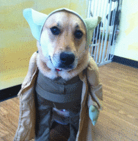

<div class="page page-photos">
    <h1>Photos</h1>

    <div class="inner-page">
        <div class="carousel">
            

            

            

            

            
            
            <div class="carousel-nav">
                <button id="carouselNavPrev" type="button" 
                    class="carousel-nav-btn carousel-nav-prev"
                    tabindex="0">
                    <i class="fa fa-chevron-up"></i>
                </button>

                <button id="carouselNavNext" type="button" 
                    class="carousel-nav-btn carousel-nav-next"
                    tabindex="0">
                    <i class="fa fa-chevron-down"></i>
                </button>
            </div>
        </div>
    </div>
</div>

